Lecture
Monday, January 26, 2026
Today
The Climate System
What Generates Extremes?
Variability and Persistence
Models and Their Limits
Sea Level Rise
Wrap Up
Climate is governed by the Navier-Stokes equations on a rotating sphere, heated unevenly by the sun.
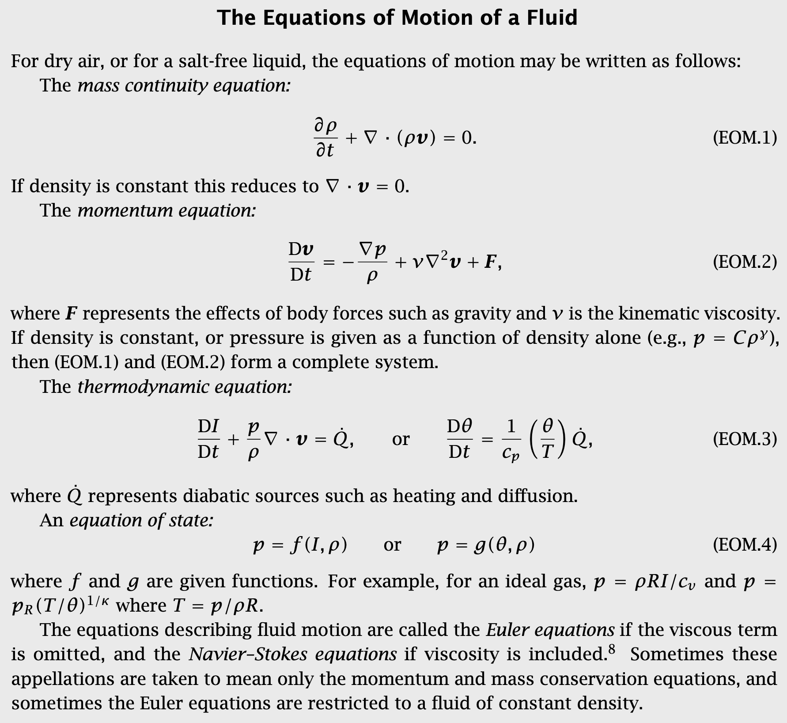
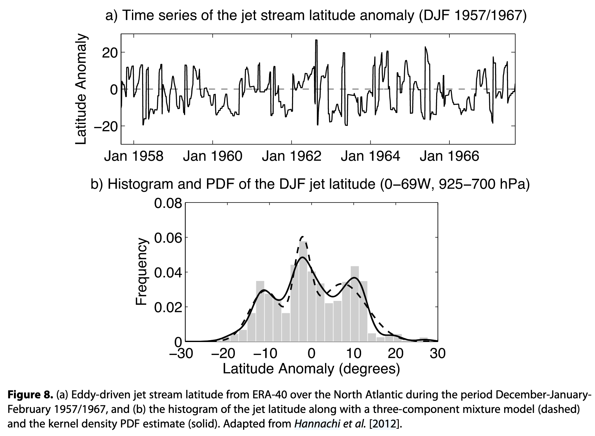
The climate behaves as a nonlinear dynamical system with characteristic modes or regimes.
An initial value problem
A boundary value problem
We cannot predict what the weather will be on January 26, 2100. We can project the statistical properties:
Today
The Climate System
What Generates Extremes?
Variability and Persistence
Models and Their Limits
Sea Level Rise
Wrap Up
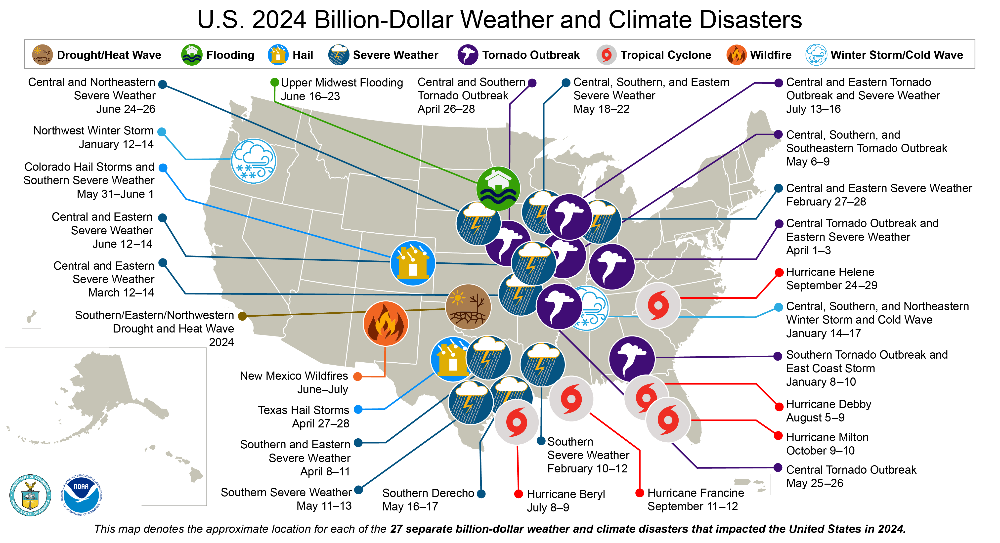
U.S. billion-dollar weather and climate disasters. Source: NOAA NCEI
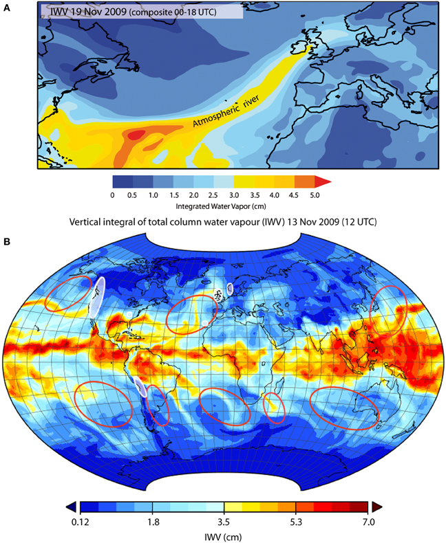
Organized moisture transport from warm tropical and subtropical oceans drives a large fraction of midlatitude rainfall.
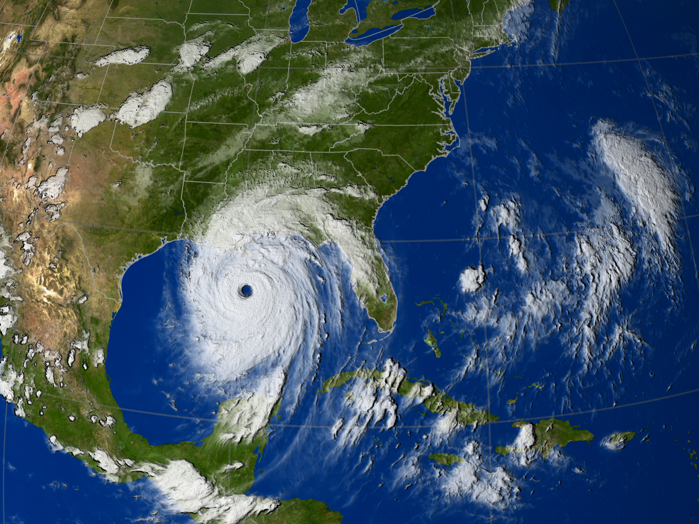
Organized vortices that convert ocean heat to kinetic energy:
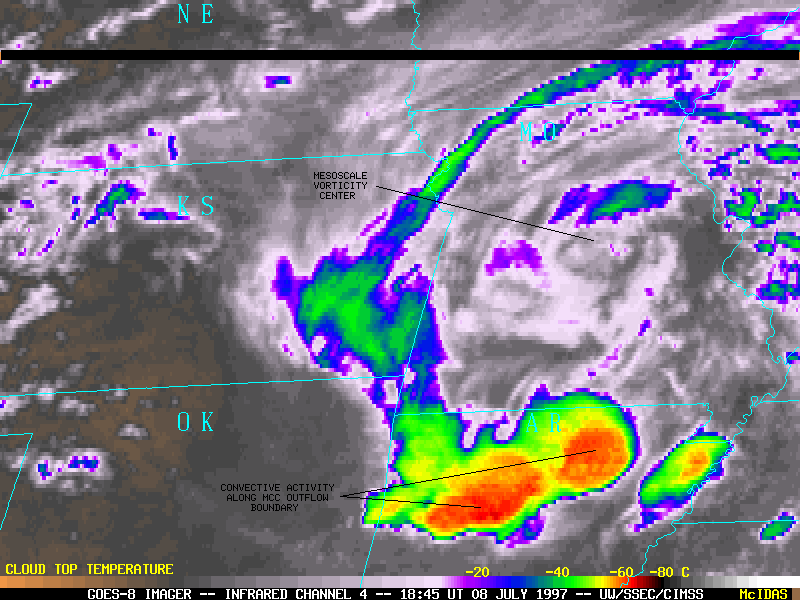
Organized clusters of thunderstorms (10–100 km):
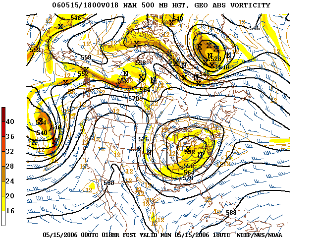
Persistent high-pressure systems that “block” normal flow:
Today
The Climate System
What Generates Extremes?
Variability and Persistence
Models and Their Limits
Sea Level Rise
Wrap Up
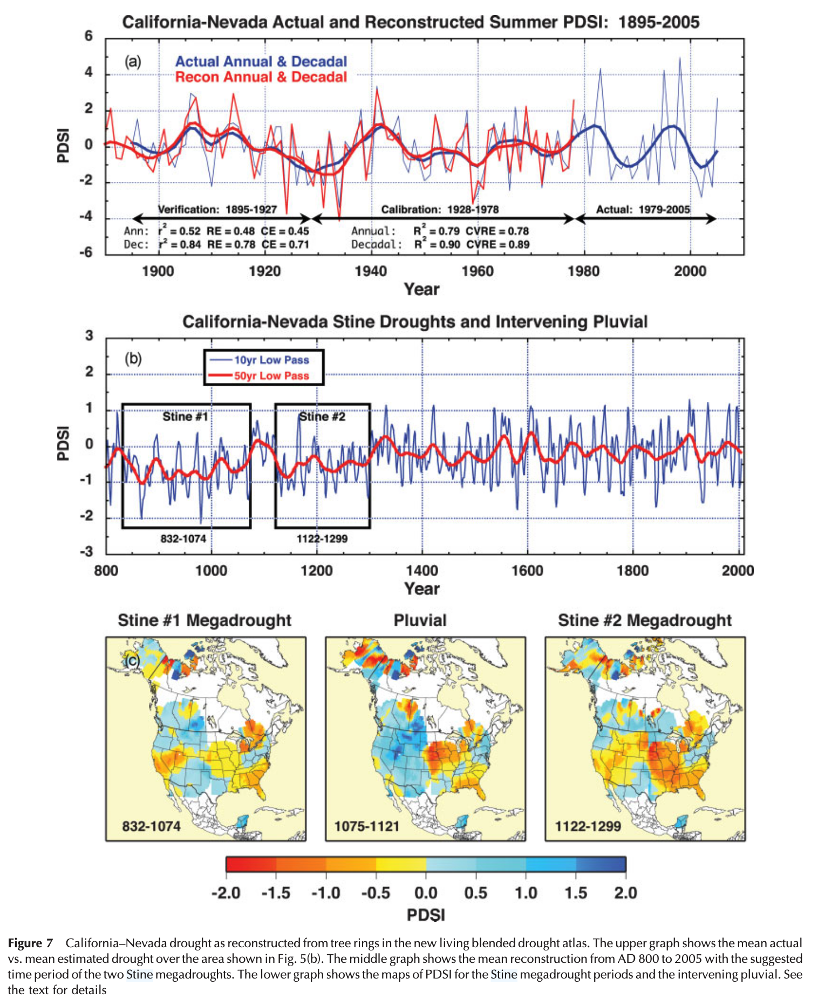
Climate extremes are not independent events.
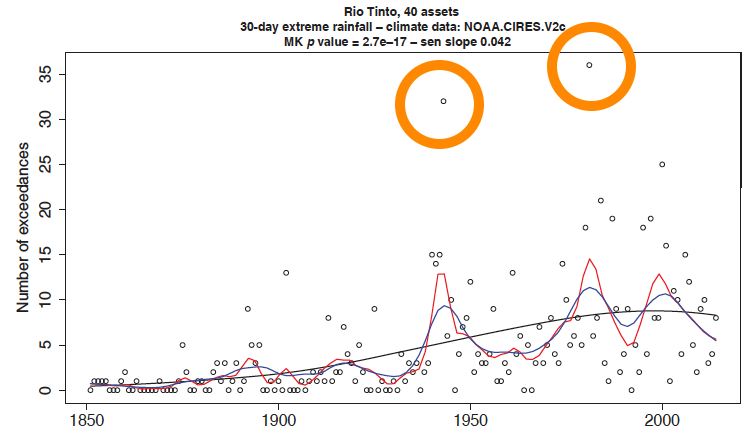
Extremes are spatially correlated.
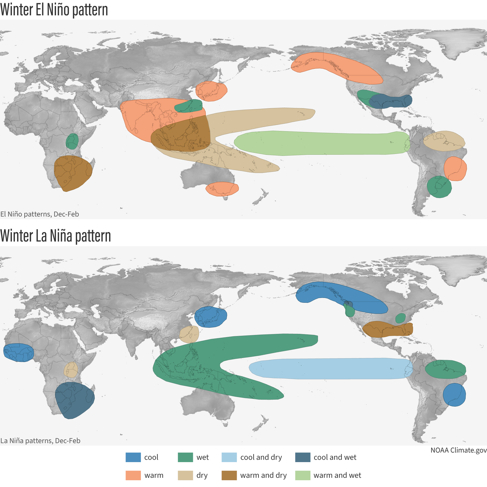
climate.govThe El Niño-Southern Oscillation (ENSO) is the leading mode of variability of the tropical Pacific, with global teleconnections.
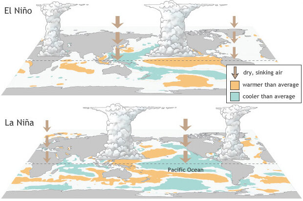
climate.govLarge-scale patterns organize climate variability:
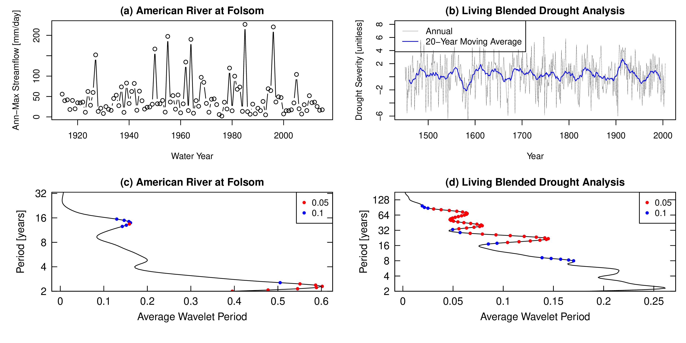
Wavelet analysis reveals variability at multiple timescales. Doss-Gollin et al. (2019)
The paleo record shows:
Today
The Climate System
What Generates Extremes?
Variability and Persistence
Models and Their Limits
Sea Level Rise
Wrap Up
General Circulation Models (GCMs) solve physics on a 3D grid:
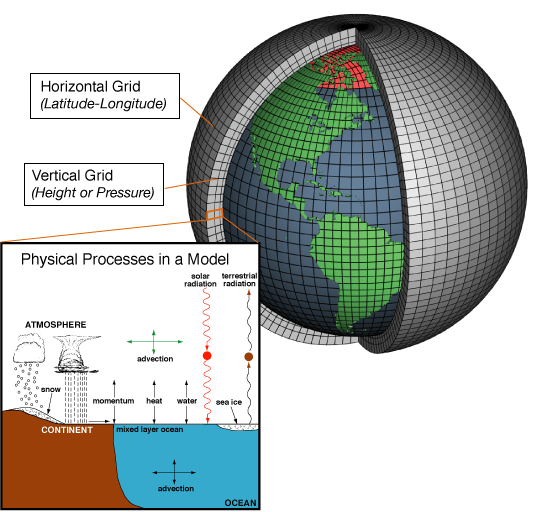
Climate models divide Earth into a 3D grid of cells. Source: NOAA Climate.gov
GCMs resolve features larger than ~100 km.
Many hazards are smaller:
| Hazard | Typical Scale |
|---|---|
| Tropical cyclones | ~50 km eye |
| Thunderstorms | ~10 km |
| Tornadoes | ~1 km |
Sub-grid processes must be parameterized, not resolved.
Translating GCM output to local scales:
Statistical Downscaling
Dynamical Downscaling
| Concept | Definition | Example |
|---|---|---|
| Prediction | What WILL happen | Tomorrow’s weather |
| Projection | What WOULD happen IF | Temperature if CO₂ doubles |
| Scenario | Plausible pathway | RCP 8.5 emissions |
Confusing these leads to poor decisions.
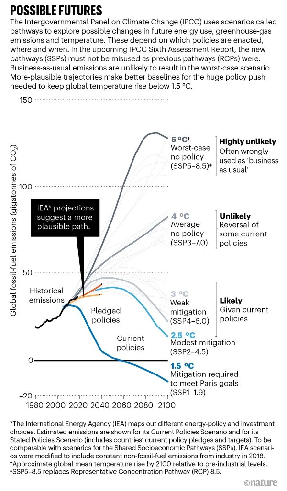
Today
The Climate System
What Generates Extremes?
Variability and Persistence
Models and Their Limits
Sea Level Rise
Wrap Up
Sea level rise integrates everything we’ve discussed:
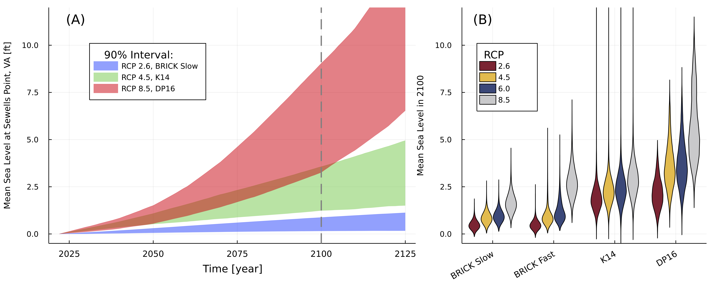
Local sea level is affected by multiple processes. Source: NOAA
Thermal Expansion
Ice Sheet Melt
Marine Ice Sheet Instability (MISI) and Marine Ice Cliff Instability (MICI):
These processes are the “synoptic generators” of the SLR tail.
Local sea level ≠ global mean:
Today
The Climate System
What Generates Extremes?
Variability and Persistence
Models and Their Limits
Sea Level Rise
Wrap Up
Wednesday: IPCC reading discussion on observed and projected changes
Friday (Lab 3):
James Doss-Gollin